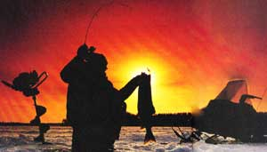
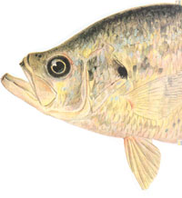
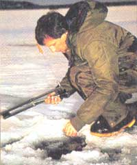
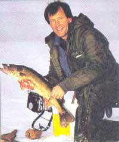

With the right jigging techniques, you can bring in a fresh fillet tonight.
"There is no form of matter on earth that so
defies us one day and then so fully yields to
us the next as does water."
January 13
7 A.M. I pulled into the parking space and saw that my pal Jimmy had beaten me to the spot. So I carefully made my way out onto the thin, black ice. I had learned early on that commotion on ice will scare away wary game fish. This spot is funny though. Not only do you have to get there at first ice, but you have to be the first one on it. Just one day of fishing is enough to chase the browns off their submerged sand bar for the rest of the season.
"I just got here-nothing yet," Jimmy said as I approached.
After 10 years of fishing here, I knew the bar in detail. I chopped a hole gingerly and saw the ice was just thick enough.
"What will you give me if I catch a trout on the first jig?" I asked.
He had hardly mouthed his snide retort when my little two-foot jig pole took a nose dive towards the hole. What would soon be a tarragon-broiled brown trout flopped wildly on the ice. It was on the very first jig of the lure.
Although tip-ups are more common, jigging is the more dynamic and productive method of ice fishing.
By 11 A.M., we had taken 23 browns, 18 white perch, and a half dozen yellow perch. At 1 P.M., I landed the best fish of the day, a 20½-inch brown. And at 5:30 P.M., after everyone had gone home, I hooked the big one that got away: a brown of about eight or 10 pounds. It was the largest trout I had ever hooked through the ice-and it was positively magnificent.
At the end ot the day, I stood near shore with my gear collected around me. The frozen shoreline was serene, stark, and beautiful. I glanced back one last time to where I had been fishing and said aloud, "God, let me do this one more time".
In ice fishing, there are two basic types of devices: tip-ups and jigging poles. A tip-up is a mechanical device that's almost always baited with live bait and can be left suspended over a hole that is cut into the ice. A jig pole is most frequently hand held by an angler, who usually uses lures instead of bait. Although tip-ups are more common, jigging is the more dynamic and productive method-my jig poles have probably produced twice as many fish. The jigger is also more mobile, the lure is constantly moving and flashing, and because the jig pole is hand held, you're in direct contact with the lure. This gives you quite a bit of control. By contrast, a tip-up is left to itself on the ice, leaving you to simply hope the take is good.
Every year, I see fishermen out there using six- and seven-foot rods for ice jigging and I wonder how they hook large game fish: How do they play the fish with the rod hand and attempt to get it up through the hole with the other? You inevitably lose some control of the rod at the critical moment, right when the fish is floundering at the hole. All of my jig poles are between 24 to 42 inches in length, and I use both bait-casting (conventional) jig rods-those with an offset real seat-and spinning rods with straight handles. Although my spinning rods are strictly graphite, I do have some bait-casting rods in fiberglass as well.
Spinning equipment is better for catching panfish. For one thing, the spinning rods made for ice jigging are almost always lighter than the bait-casting models, and you need a very light-tipped jig rod to consistently take panfish. Also, you can let the lure free-spool back to the bottom (or to the fish zone), whereas with a bait-casting outfit, you will probably have to strip line off manually, which wastes time. When you hit a fast moving school of panfish, you want to get back in business as quickly as possible after taking a fish.
When it comes to game fish or larger panfish, I use a bait-casting set-up. I like the sensitivity of a well-educated thumb on the spool; it allows me to give line at will or check the fish a bit. This is imperative when a fish at the hole makes one last lunge for freedom. Many spinning reel drags just aren't smooth, and are even less so in winter.
Choosing the right line
Four- and six- pound test lines are good for catching panfish, the heavier one only when large game fish are possible. Class Tackle makes a line rated at 3.2 pound test, which is the lightest I'll use in winter. Four-and six-pound test work well for catching trout (mostly six) and 12- to 14-pound test are good for pickerel and pike. While jigging hasn't helped me ice a lot of pike, I have taken enough to allot one jig pole for just pike. As for line color, I have done no controlled experiments pitting colored lines against clear ones. Instinct tells me to use clear.
Regardless of which line you choose, don't be shy about putting backing on first. The fuller the spool, the less cranking to get the fish up. This pays off when you're onto a school of fast-moving panfish. It'll also help you pull a big game fish away from the bottom quickly if you suspect there are bottom snags or heavy weeds around. Although cheap, mono line is fine for backing, a dark-colored braided dacron or nylon of 12- or 15-pound test is better. It will help you see when your working line is starting to get too short.
Homer Circle, a dean of American fishing writers, once said that the single biggest mistake that experienced fishermen make is not cutting off a few feet of line before starting a new day of fishing. Those first few feet take much abuse. However, in ice fishing, the most abuse comes at the distance from the lure where the line is touching the rim of the hole. It's good practice to strip 30 or so feet off the reel before starting. If you tie on about hundred yards of working mono line, you should be able to fish for five or six days before adding more.
1. Never drive a vehicle on the ice unless you have substantial ice fishing experience or are with someone who does.
2. Remember that most lakes freeze non-uniformly; there could be good ice in some spots but treacherously thin ice in others.
3. Tie some kind of baton to a length of rope (at least 50 feet) and bring that with you each time. It could be a lifeline for someone who has fallen through the ice.
4. Be particularly wary of shore ice. It's stability can vary widely.
5. Remember that the ice can become thinner as you move farther out into the main or more open part of the lake, especially in early season.
6. Be particularly wary of ice that forms over or around moving water: rivers, currents, or water movement caused by intake and/or discharge (as in a water supply reservoir)
7. Be wary of any patch or section of ice that looks different or peculiar in any way whatsoever.
8. Always carry an ice chisel or "spud" to test the ice ahead of you.
9. Never assume that the ice is safe, even if there's been much human activity during that day. There are innumerable things that can create thin areas of ice on a body of water.
10. Keep an entire set of dry clothing in the car that you can change into if you fall through. Always bring a bottle of hot liquid too.
11. If you fish from a shanty (ice house) that is equipped with a heater, make sure you have more than adequate ventilation if there's any chance you might fall asleep.
12. Spend a lot of time on the ice!
Editor's Note: Jim Capossela is a life-long angler and writer who has written 10 books on fishing and outdoor recreation. This article was adapted from his latest book Ice Fishing,. just published by The Countryman Press, P.O. Box 175, Woodstock, Vt. 05091. (800/245-4151). The book is available for $15 through bookstores and sporting good stores or may be ordered from the publisher, postpaid for $17.50.
Jig lures
There are two main types of jig lures: those used for game fish and smaller ones used for panfish. In both categories, there are many designs-a few realistic, most simulative. Clever tinkerers of the fishing lure industry have actually devised jig lures, such as the Jigging Rapala, that swim in a little circle if you raise and lower your rod tip at the right tempo. "Airplane Jigs" have little wings. Some have propellers, some have sound chambers. Between straight up-and-down lures and the true swimming-jigs, you have a range of lures that flutter in all different ways.
If you're specifically after panfish, a small jig lure may be essential. Still, nice-size panfish and game fish will sometimes fall to a 4N Swedish Pimple. If you're after trout, step up to a 6N Pimple, and when deep water jigging for lake trout, tie on a 7N Pimple or even larger lure. For smaller perch (whites or yellows), or smaller crap-pies, try a 3N or 4N Pimple. When you step down this small, you occasionally pick up a nice-size sunfish.
Sunfish jigs, sometimes called "dot jigs" or "teardrop jigs," are really types of panfish jigs. Almost all of these small panfish jigs (also good for larger ones) have a single hook. Many have little blades, and come in a kaleidoscope of colors, and they may have pearl or fluorescent finishes.
Cut your hole
The first step in ice fishing is making your hole. Do this by striking the ice repeatedly with the sharp, chisel-like edge of the spud. Or, if your prefer to use a manual auger, turn the offset and free-spinning handle round and round, until the two cutting blades on bottom cut a round hole (some pressure must be applied). Let the implement do all the work. All you have to do is hold it securely.
Six inches is an adequate size hole about 95 percent of the time. Unless you are consistently fishing for very large pike or trout or you are spear fishing, the six-inch hole should do it. For panfish, five inches is fine.
The more baitfish-oriented a particular fish is, the more active your lure should be.
After you spud, clear away the ice chips two feet around the hole (10 feet if you're after trout). Use your foot or a skimmer to even the area. On sub-freezing days, scoop water out of the hole and splash it around. As it freezes, it will form a smooth surface. Leaving chips lying around will allow a line to catch on them while you're playing a large fish. In sub-zero temperature; ice chips freeze upwards and will not give at all. A good, clean area can save the day.
Jigging
You're ready to lower your Jig lure (with or without bait) down into the water. Let it settle to the bottom, where you'll take the most fish. Pull it up between a foot to 18 inches and then raise and lower your rod. Most popular jig lures work vertically.
It's best to experiment with jigging motions. Try jiggling the lure in small movements for a few minutes non-stop. Or "tease" panfish with slight motions. The classic two-foot-lift-and-then-fall method works for many. Or, in deeper water, when you're after trout try high, vigorous lifts.
My theory is that the more baitfish-oriented a particular fish is, the more active your lure should be. For example, a bluegill or other small panfish, that feeds heavily on plankton or other small forms of food, won't usually strike a large, minnow-imitating jig lure. Big jig lures, moved quickly, may even scare them off. Bigger panfish might eat a mix of small stuff along with a fair number of minnows. Use larger lures and work them energetically with these fish. Large game fish that feed mostly on minnows are apt to strike a larger lure, and one that's being jigged vigorously.
In the early stages of fishing, remain standing. (You're actually crouching.) That way, if a big fish starts tugging, you can walk around the hole so you're opposite the direction that the fish is pulling. This will somewhat ease the pressure of the line against the bottom edge of the hole. As the prize fish gets nearer the hole, you may have to kneel down to land it. Note: If the ice is wet that day, your pants will get wet, leaving you mighty cold. My buddy solved this problem by carrying a hot seat with him, hooking it on his belt directly over his fanny. He simply unhooks the hot seat any time he needs to kneel down to the hole.
You caught one! Now comes the big decision. Will you gaff it? Gill it? Grab it just behind the head? The important thing is to plan ahead of time. Any time you dead-lift a fish, expect the line to break. Experience will tell you how much weight you can lift with what pound test line.
Pike, chain pickerel, walleyes, and saugers can be grabbed just behind the head. Bass, which are lethargic in winter, can be grabbed by the lower jaw; it will open as you pull the base close to the hole. Even big pike can be pulled up then grabbed behind the head (make sure you wear gloves).
When it comes to keeping your fish until it's time to leave, you can chisel out or auger out a "well," a depression in the ice in which water is placed. The fish won't freeze up. Or you can place your fish on a stringer, drop it in a hole, and secure the top loop of the stringer to some object like a bucket or ice sled. If it's above 32° F, you can simply put the fish in a bucket.
You are done with the hard part. It's now time to go home and experience the ultimate pleasure and highest form of showmanship-cooking your fish. Bon apetit; enjoy your fillet.
|
 ? IN-FISHERMAN MAGAZINE |
 ? IN-FISHERMAN MAGAZINE |
 |
|
 |
|
|